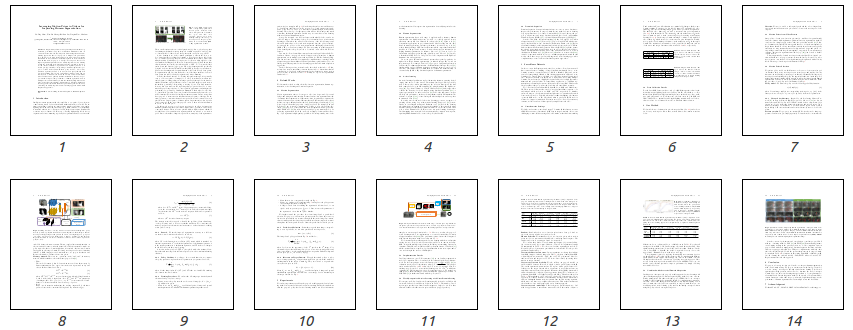

European Conference on Computer Vision (ECCV) 2018


Abstract

Despite many advances in deep-learning based semantic segmentation, performance drop due to distribution mismatch is often encountered in the real world. Recently, a few domain adaptation and active learning approaches have been proposed to mitigate the performance drop. However, very little attention has been made toward leveraging information in videos which are naturally captured in most camera systems. In this work, we propose to leverage “motion prior” in videos for improving human segmentation in a weakly-supervised active learning setting. By extracting motion information using optical flow in videos, we can extract candidate foreground motion segments (referred to as motion prior) potentially corresponding to human segments. We propose to learn a memory-network-based policy model to select strong candidate segments (referred to as strong motion prior) through reinforcement learning. The selected segments have high precision and are directly used to finetune the model. In a newly collected surveillance camera dataset and a publicly available UrbanStreet dataset, our proposed method improves the performance of human segmentation across multiple scenes and modalities (i.e., RGB to Infrared (IR)). Last but not least, our method is empirically complementary to existing domain adaptation approaches such that additional performance gain is achieved by combining our weakly-supervised active learning approach with domain adaptation approaches.
Method

Our goal is to obtain a set of motion prior m (i.e., candidate foreground mask) from video frames. Although many sophisticated motion segmentation methods can be used, we simply apply Flownet2. Then, we obtain m as the binarized flow map such that mi = 1 if its flow magnitude is larger than a threshold &tau τ . Since surveillance cameras in our dataset are typically stationary, we may assume that most background and foreground pixels corresponding to small and large flow magnitude, respectively. For non-stationary cameras, other motion segmentation methods can be used to handle camera motion.
These automatically obtained motion priors inevitably will be noisy and contain outliers. Hence, we propose a memory-network-based policy model to select more accurate ones instead of directly finetuning the segmenter with all noisy labels.
Resources

Example
Acknowledgement